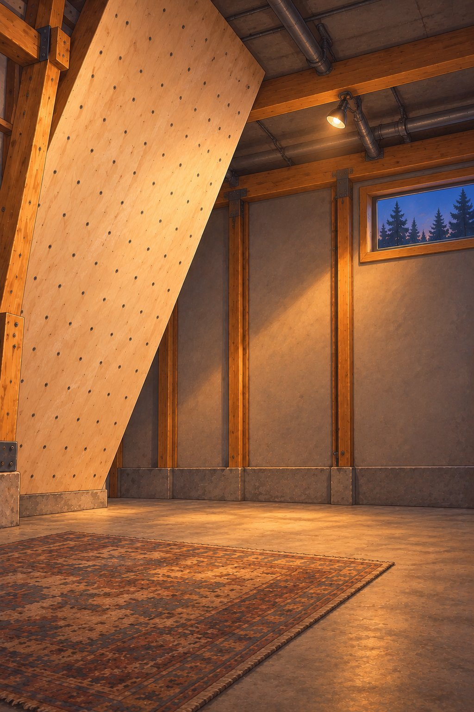

Drag the climber up or down on the board (one move per 48 px). A fast downward fling or dragging 40 px off the board is a fall. Wait 3 s for the chalk rest. Drag the floor climber onto the board (or press Mount) to jump on.

Log
Measurement (frame px in 1024x1536 space; red = high fist, blue = low fist, green = soles, yellow = head / torso)